INSTALLATION / PERFORMANCE
我思う故に我在り
I THINK, THEREFORE I AM / 我思故我在
Scroll
概念CONCEPT
着想の源
研究：背景・映画・インタビューTHOUGHT ↔ REALITY ↔ MEMORY
想像は未来を予測するのではなく、現在を映す。
RESEARCH QUESTION
二つの入力
虚
想像／投影
まだ現実になっていない意識の像
実
観察／知覚
身体を通して接する物理的な現実
人間の認知へ
COGNITION
理解 × 想像観察が「実」を理解させ、想像が「虚」に形を与える
現実は受動的に受け取るものではなく、人間の理解と想像によって構成される。
複数の実在を形成
重なり合う実在
実在実在実在実在実在
存在
存在はリアルの重なり合いです。私たちが考える存在は、集団認知の中で形成された、重なり合うリアルです。
20s
30s
40s
RESEARCH → INSIGHTS
画像研究と再構成実験EXTRACT → FRACTURE → OVERLAP
日常の像を分解し、存在しない存在を組み立てる
VISUAL GRAMMAR / BLOCK · DIVIDE · LAYER
車：映画の記憶から形を抽出する
映画の記憶
日常の車
照合・重ね合わせ
要素抽出
破裂・分割
旧宅：現実と記憶を重ね直す
私の実在
記憶の旧宅
現実／意識から再構成
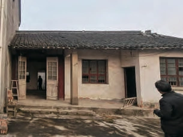
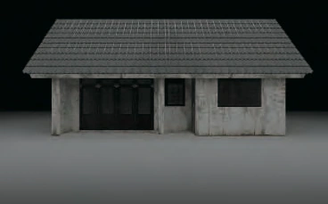
要素抽出
破裂・分割
私：他者の認知によって再構築される
鑑賞者
观察与判断
评价议论描述印象推测传言
文字と画像へ
文字画像
投影到自我
反复叠加
文字图像记忆文字图像记忆图像我
形成被认知的我
媒体実験：光・空気・水INTANGIBLE ↔ TANGIBLE
光
空気
水
スクロールして、三つの実験を虚と実のあいだに配置する
光
空気
水
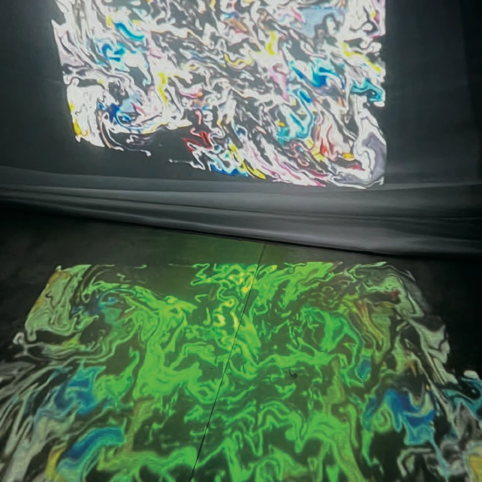
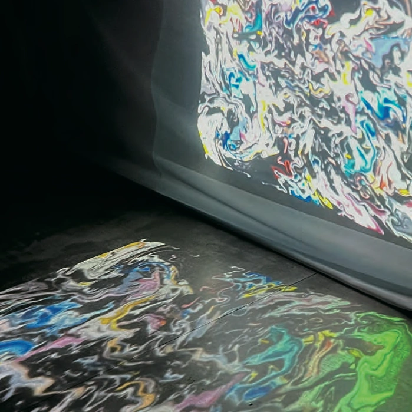
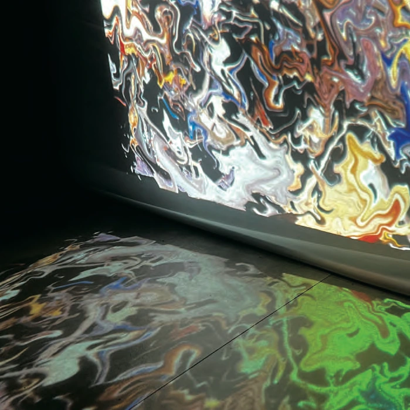
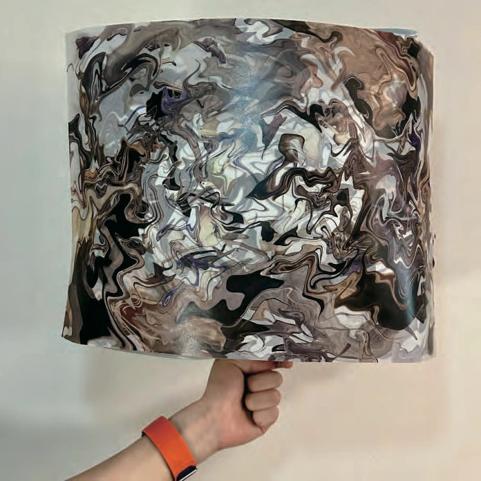
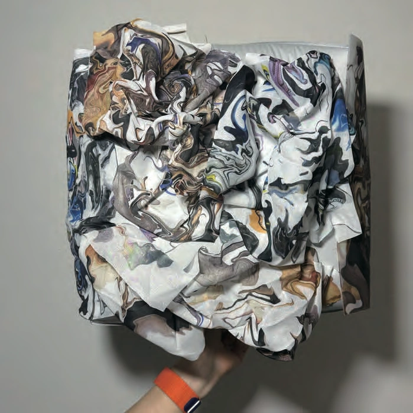
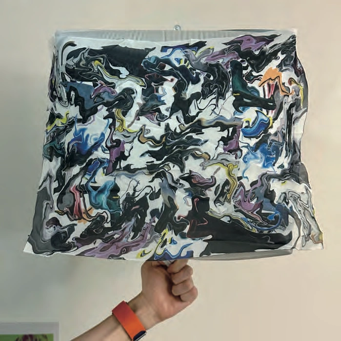
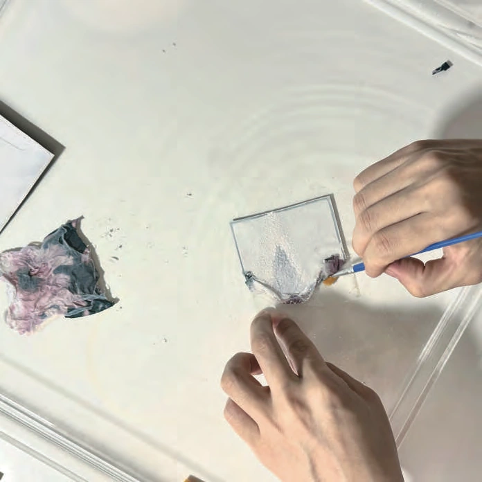
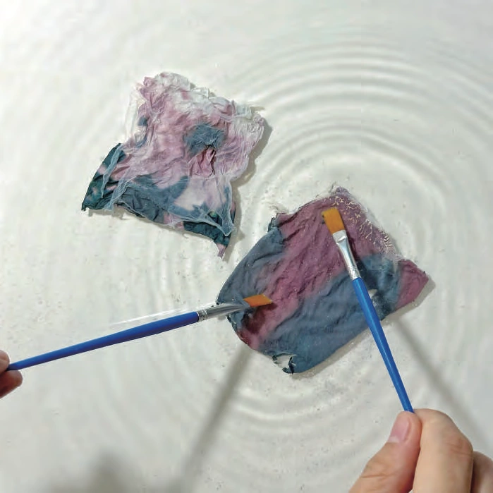
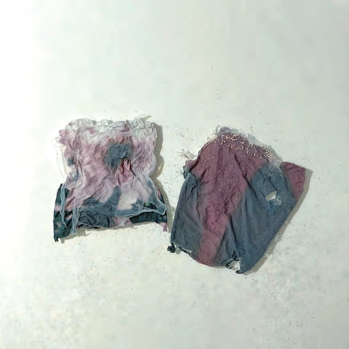
虚無形／触れられない
光見える・触れられない
空気見えない・形を持つ・触れられる
水透明・触れられる
実有形／触れられる
実験の洞察と媒体決定AIR / BALLOON / COLLAGE
DECISION / SELECTED MEDIUM
空気／風船
—
—
—
シミュレーションと制作MODEL → SCALE → SURFACE
3D SIMULATION
FABRICATION
行動実験／パフォーマンスGAZE → POSSESS → RUPTURE → RELEASE
第一篇章
01 / 16
第二篇章
01 / 07
第三篇章
01 / 06
第四篇章
01 / 06
映像FULL PERFORMANCE FILM